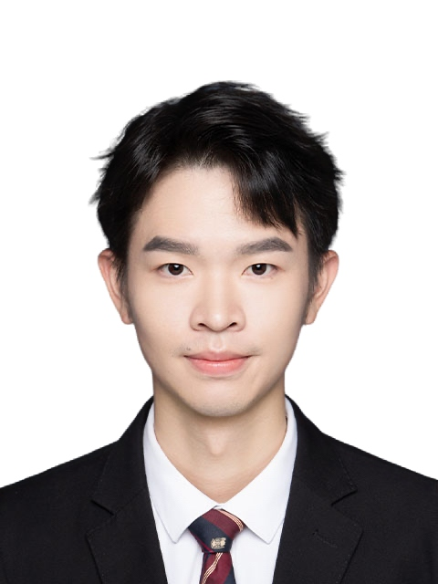

yz7212@nyu.edu
mobile: +1 7189134506
Nationality: Chinese
# Yuxuan Zhang
## Education Background
#### Southern University of Science and Technology, ShenZhen, China
Bachelor in Information Eng (2020/09-2024/06)
#### New York University
Master in Electrical Eng; GPA: 4.0/4.0 (2024/09-2026/06)
## Executive Summary
* Extensive research and project experience in Neural network optimization, Sensor perception, Intelligent object perception.
* Proficient in Python, MATLAB, C/C++, JAVA
## Publications
* Zhibin Li, Jing Yang, Yuxuan Zhang, Peiyan Geng, et al. Ultrafast Readout, Crosstalk Suppression Iontronic Array Enabled by Frequency-Coding Architecture. Nature npj Flexible Electronics.(Link: https://doi.org/10.1038/s41528-024-00295-2)--Third Author
* Zhibin Li, Yuxuan Zhang, et al. Associated Learning Architecture Equipped with Parallel Impedance Sensing Strategy to Enhance Cross-modal Object Perception. IEEE Transactions on Instrumentation & Measurement (TIM)--First Author
## Working Experience
#### Comba Intelligent Technology (Guangzhou) Co., Ltd. (Software Engineer, 2022/07 - 2022/08)
* Trained defect detection models for pills, fine-tuning the training parameters based on collected data, ultimately achieving a recognition success rate of over 99% using the YOLO5 model (Pytorch).
* Tested and installed various lenses on pharmaceutical machinery, and evaluated the accuracy of different training models to enhance pill defect detection and removal, reaching a removal rate of over 99.9% for defective pills.
* Collected and labeled defect images of microelectromechanical motors for future use in model training. Achieving a recognition success rate of 82.1%.
## Projects
## Awards
* Third Prize (Provincial Level), 2023 National Undergraduate Electronics Design Contest (TI Cup)- Designed an Inductance and Capacitance Measurement Device as the group leader, responsible for PCB design and ARM MCU programming. (2023/08)
* First prize (Intra-university Level), National Undergraduate Electronics Design Contest: Signal Distortion (THD) Measurement(TI MSP432 Programming) (2023/05)
* SUSTech Excellent 2024 Graduate for Exceptional Performance (2024/06)
* SUSTech Outstanding Student for exceptional performance in the year of 2023 (2023/10)